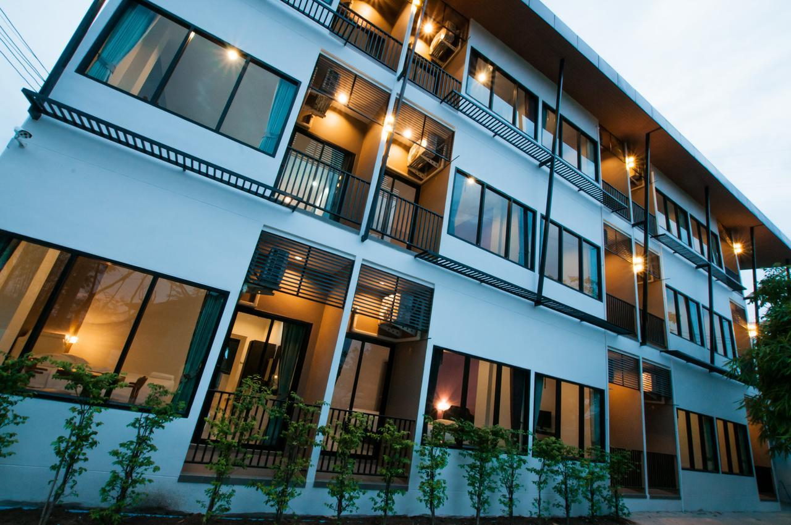
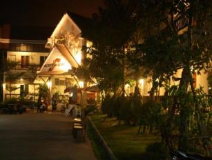
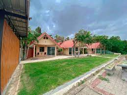

Headers examples
วัดพระธาตุพนมวรมหาวิหาร
วัดพระธาตุพนมวรมหาวิหาร พระธาตุประจำปีเกิดของปีวอกและผู้ที่เกิดวันอาทิตย์ ภายในองค์พระธาตุบรรจุพระอุรังคธาตุของพระสัมมาสัมพุทธเจ้าไว้ ลักษณะของสถาปัตยกรรมมีแหล่งที่มาที่เดียวกันกับปราสาทของขอมและได้ทำการบูรณะเรื่อยมา พระธาตุพนมไม่เพียงแต่เป็นศูนย์รวมจิตใจของชาวนครพนมเท่านั้นยังเป็นที่เคารพของ ชาวไทยภาคอื่น และชาวลาวอีกด้วย ว่ากันว่าถ้าใครได้มานมัสการพระธาตุครบ 7 ครั้ง จะถือว่าเป็น “ลูกพระธาตุ” เป็นสิริมงคลแก่ชีวิตและจะมีความเจริญรุ่งเรือง หรือแม้แต่ได้มากราบพระธาตุพนม 1 ครั้ง ถือเป็นมงคลแก่ชีวิตแล้ว
ภายในองค์พระธาตุ บรรจุพระบรมสารีริกธาตุ และของมีค่ามากมายนับหมื่นชิ้น โดยเฉพาะฉัตรทองคำบนยอดพระธาตุเป็นฉัตรทองคำที่มีน้ำหนักถึง 110 กิโลกรัม ปัจจุบันองค์พระธาตุ มีฐานกว้างด้านละ 12.33 เมตร สูง 53.60 เมตร เป็นเจดีย์ทรงสี่เหลี่ยมสูงแลดูสง่างาม งานนมัสการองค์พระธาตุเริ่มตั้งแต่วันขึ้น 10 ค่ำ เดือน 3 ถึงวันแรม 1 ค่ำ เดือน 3 ของทุกปี หากใครเกิดในปีวอก หากมาเที่ยวนครพนม ควรแวะมาไหว้เพื่อความเป็นสิริมงคล
วัดพระธาตุพนม ถือเป็นสถานที่อันศักดิ์สิทธิ์ เมื้อถึงคราวพระราชพิธีราชาภิเษกทุกรัชกาลมา จะต้องนำน้ำจากสถานที่อันศักดิ์สิทธิ์ไปร่วมพิธีด้วยเพื่อประกอบพิธีมุรธาภิเษก และเมื่อถึงเทศกาลสงกรานต์ซึ่งถือว่าเป็นวันขึ้นปีใหม่ ตามประเพณีเดิมจะทรงพระกรุณาโปรดเกล้าฯ พระราชทานต้นไม้ ทอง เงิน น้ำอบและผ้าคลุมส่งไปนมัสการพระธาตุพนมทุกปี และเมื่อถึงเทศกาลเข้าปุริมพรรษา ทรงพระกรุณาโปรดเกล้าฯ พระราชทานเทียนพรรษาเป็นพุทธบูชาทุกปีมา งานนมัสการ พระธาตุพนมประจำปี ถือเอาวันขึ้น 10 ค่ำ เดือน 3 ของ ทุกปีเป็นวันแรกของงานไปสิ้นสุดเอาวันแรม 1 ค่ำ เดือน 3
10 ที่พักนครพนมเมืองประวัติศาสตร์น่าชม พระธาตุพนมคู่เมือง
นครพนม เป็นจังหวัดที่อยู่ในภาคตะวันออกเฉียงเหนือตอนบน
เป็นชายแดนที่มีความอุดมสมบูรณ์ มีพื้นที่ ทิวทัศน์ที่สวยงาม และยังมีความหลายหลายทางวัฒนธรรมรวมไปถึงประวัติศาสตร์ที่น่าศึกษา นครพนมอยู่ติดแนวชายแดนฝั่งแม่น้ำโขง สามารถเดินทางข้ามไปยังฝั่งประเทศลาวได้ นอกจากนี้เมืองนครพนมยังมี
พระธาตุพนมเป็นปูชนียสถานคู่บ้านคู่เมืองอีกด้วย
1.โรงแรมพิมพ์ศิริ - นครพนม( Pimsiri Hotel )

โรงแรมพิมพ์ศิริ เป็นจุดเริ่มต้นการเดินทางที่ดีเยี่ยมใน นครพนม ด้วยทำเลที่ตั้งอันเหมาะเจาะใน ตัวเมืองนครพนม ด้วยที่ตั้งห่างจากใจกลางเมืองเพียง 3 km ผู้เข้าพักสามารถเพลิดเพลินกับกิจกรรมที่หลากหลายและแหล่งท่องเที่ยวมากมายของเมืองได้ ด้วยทำเลที่สะดวกสบายของโรงแรม คุณสามารถเดินทางไปยังสถานที่ที่ต้องไปชมให้ได้ของเมืองได้อย่างง่ายดาย ผู้เข้าพักสามารถเลือกห้องพักจาก 30 ห้อง ทุกห้องให้ความรู้สึกสงบและกลมกลืนอย่างแท้จริง โรงแรมได้จัดเตรียมสิ่งอำนวยความสะดวกทางนันทนาการไว้บริการ อย่างเช่น บริการนวด, สวน ที่จะทำให้การเข้าพักของคุณน่าประทับใจไม่มีวันลืม สิ่งอำนวยความสะดวกชั้นเลิศและทำเลที่ตั้งดีเยี่ยมทำให้ โรงแรมพิมพ์ศิริ สมบูรณ์แบบสำหรับการเข้าพักของคุณใน นครพนม
ที่ตั้ง : 22/55 หมู่บ้านพิมพ์ศิริ ถ.ชยางกูร ต.ในเมือง อ.เมือง, ตัวเมืองนครพนม, นครพนมราคา : 1,000 บาท
ข้อมูลเพิ่มเติม : โรงแรมพิมพ์ศิริ - นครพนม
2.โรงแรม ณ ธาตุพนม เพลส - นครพนม
( Na That Panom Place Hotel )

โรงแรม ณ ธาตุพนม เพลส เป็นจุดเริ่มต้นการเดินทางที่ดีเยี่ยมใน นครพนม ด้วยทำเลที่ตั้งอันเหมาะเจาะใน ธาตุพนม จากที่นี้ ผู้เข้าพักสามารถไปยังทุกที่ในเมืองอันมีชีวิตชีวานี้ได้อย่างง่ายดาย อีกทั้งยังอยู่ใกล้ วัดพระธาตุพนม, หอศิลป์ อีกด้วยการบริการที่ดีเลิศและสิ่งอำนวยความสะดวกที่เหนือกว่าของ โรงแรม ณ ธาตุพนม เพลส ทำให้การเข้าพักที่นี่เป็นประสบการณ์ที่ไม่อาจลืม โรงแรมเสนอการบริการที่หลากหลาย รวมถึง คอฟฟี่ช็อป, บริการซักรีด, ห้องประชุม, จักรยานให้เช่า, ที่จอดรถ
ที่ตั้ง : หมู่ 10 ถนนชยางกูล, ธาตุพนม, นครพนม, ไทย
ราคา : 500-1,300 บาท
ข้อมูลเพิ่มเติม : โรงแรม ณ ธาตุพนม เพลส - นครพนม
3.เรือนรจนารีสอร์ท ริมโขงธาตุพนม - นครพนม
( Rotchana's Retreat Hotel on Mekong That Phanom )

เรือนรจนารีสอร์ท ริมโขงธาตุพนม ตั้งอยู่ในใจกลางของ ธาตุพนม และเป็นจุดที่ยอดเยี่ยมในการเที่ยวชม นครพนม จากที่นี้ ผู้เข้าพักสามารถไปยังทุกที่ในเมืองอันมีชีวิตชีวานี้ได้อย่างง่ายดาย อีกทั้งยังอยู่ใกล้ วัดพระธาตุพนม, หอศิลป์ อีกด้วย ด้วยการบริการที่เหนือกว่าและสิ่งอำนวยความสะดวกครบครัน เรือนรจนารีสอร์ท ริมโขงธาตุพนม จังหวัดนครพนม รับประกันความสะดวกสบายสูงสุดในการเข้าพัก ผู้เข้าพักสามารถใช้งานสิ่งอำนวยความสะดวกต่างๆ ที่ทางโรงแรมจัดเตรียมไว้ให้ เช่น ตู้นิรภัย, ร้านอาหาร, ที่จอดรถ, บริการรถรับส่ง, พนักงานต้อนรับ
ที่ตั้ง : 165 หมู่ 4, ตำบลน้ำกล่ำ, ธาตุพนม, ธาตุพนม, นครพนม, ไทย
ราคา : 600-1,400 บาท
ข้อมูลเพิ่มเติม : เรือนรจนารีสอร์ท ริมโขงธาตุพนม นครพนม
4.โรงแรมสยามแกรนด์ - นครพนม
( Siamgrand Hotel )
( Rotchana's Retreat Hotel on Mekong That Phanom )
หากคุณกำลังมองหาโรงแรมที่เดินทางไปได้ง่ายใน นครพนม ไม่ต้องมองหาที่อื่นนอกจาก โรงแรมสยามแกรนด์ จากที่นี้ ผู้เข้าพักสามารถไปยังทุกที่ในเมืองอันมีชีวิตชีวานี้ได้อย่างง่ายดาย ไม่ต้องมองหาที่พักที่ไหนไกลเพื่อไปยังสถานที่และแหล่งท่องเที่ยวในพื้นที่ โรงแรมแห่งนี้ตั้งอยู่ใกล้ แม่น้ำแม่โขง, ตัวเมืองนครพนม, โรงพยาบาลจิตเวชนครพนมราชนครินทร์ เพลิดเพลินไปกับบริการและสิ่งอำนวยความสะดวกที่เหนือกว่าได้ที่โรงแรมใน นครพนม โรงแรมได้เตรียมบริการ บริการรถรับ-ส่งถึงสนามบิน, คอฟฟี่ช็อป, จักรยานให้เช่า, แผนกต้อนรับ 24 ชั่วโมง, ที่จอดรถ ไว้เพื่อให้มั่นใจว่าผู้เข้าพักจะได้รับความสะดวกสบายมากที่สุด
ที่ตั้ง : 218/3 ถ.นครพนม-ท่าอุเทน อ.เมือง, ตัวเมืองนครพนม, นครพนม, ไทย 48000
ราคา : 490-1,250 บาท
ข้อมูลเพิ่มเติม : โรงแรมสยามแกรนด์ - นครพนม